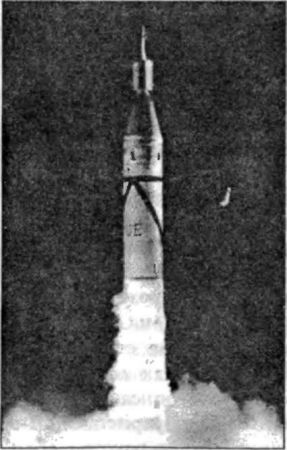

Искусственный спутник Земли и проект «RAND»
Популяризатор космонавтики и бывший сотрудник ракетного центра Пенемюнде Вилли Лей в своей книге «Ракеты и полеты в космос» честно пытался вспомнить, кто из немецких ракетчиков, вывезенных в США, первым сформулировал на английском языке идею искусственного спутника Земли, то есть беспилотного космического аппарата, вращающегося вокруг нашей планеты по замкнутой орбите. Попытка эта не увенчалась успехом. Возможно, это был плод «коллективного бессознательного», порожденного работами Германа Оберта, который в 1923 году сформулировал концепцию орбитальной станции. Вальтер Дорнбергер в книге воспоминаний указывает, что при обсуждении будущих разработок в Пенемюнде было предложено для воздаяния почести первым
путешественникам в космос помещать их набальзамированные тела в стеклянные шары, запускаемые по орбитам вокруг Земли. Видимо, эта мысль прочно засела в головах немецких ракетчиков (которые уже видели себя в этих шарах), что и привело к возникновению проекта «Рэнд».
В марте 1946 года авиация армии США, которая вскоре получила статус самостоятельного вида вооруженных сил — ВВС США, по контракту с корпорацией «Дуглас Эйркрафт компани» подготовила научный доклад «Предварительный проект экспериментального космического корабля для полетов вокруг Земли». Этот доклад считается первым документом проекта «Рэнд» (от английского сокращения «RAND» — Исследования и разработки»), положившего начало деятельности одноименной военно-политической организации. Как признают американские исследователи деятельности «Рэнд», ее сотрудники «содействовали обоснованию в 50-х годах и в последующие годы использования космических средств в интересах разведки и контроля за мероприятиями по контролю над вооружениями, прогнозирования погоды, картографирования и геодезической съемки, связи, исследования планет и межпланетного пространства, решения других задач».

В архиве Института космической политики Университета Джорджа Вашингтона имеется полный текст исторического доклада «Рэнд». В этом документе предпринята первая попытка оценить возможности создания космического аппарата, который будет вращаться вокруг Земли как ее спутник. Хотя этот документ был призван прежде всего оценить технические проблемы, решение которых приблизит начало освоения космоса, в нем содержится ряд недвусмысленных деклараций политического характера. Так, во введении к докладу подчеркивается, что, несмотря на неясность перспективы, касающейся начала космической деятельности, два момента не вызывают сомнения: «1) Космический аппарат, оснащенный соответствующим приборным оборудованием, по всей вероятности, станет одним из наиболее эффективных средств научных исследований XX века. 2) Запуск спутника Соединенными Штатами возбудит воображение человечества и наверняка окажет влияние на события в мире, сравнимое со взрывом атомной бомбы».
В докладе содержались первоначальные оценки областей возможного практического применения искусственных спутников Земли. Таких областей рассматривается три: военное использование, научные исследования и дальняя связь:
«Военное значение вывода аппаратов на околоземные орбиты обусловлено в первую очередь тем обстоятельством, что средства защиты от воздушного нападения быстро совершенствуются. Современная радиолокационная техника обнаруживает самолеты на расстоянии до нескольких сотен миль и способна предоставить точные данные об их движении. Зенитная артиллерия и управляемые снаряды способны поражать воздушные цели на значительном удалении, а применение дистанционных взрывателей повышает в несколько раз эффективность зенитных средств. В этих условиях большое внимание уделяется повышению скорости ракетных систем, что существенно затруднит их перехват. С учетом этого обстоятельства можно предположить, что в будущем для нападения с воздуха будут использоваться в значительной степени и почти исключительно высокоскоростные беспилотные ракетные системы. <…> Следовательно, разработка искусственного спутника Земли будет иметь самое непосредственное отношение к созданию межконтинентальной баллистической ракеты. Следует также отметить, что искусственный спутник Земли представляет собой наблюдательный аппарат, который не может быть сбит противником, не имеющим в своем распоряжении подобных технических средств».
4 октября 1950 года, ровно за семь лет до старта первого в мире советского искусственного спутника Земли, американский ученый Кечкемети в рамках проекта «Рэнд» представил исследовательский меморандум «Ракетный аппарат — спутник Земли: политические и психологические проблемы». В меморандуме анализируются «вероятные политические последствия, которые вызовет запуск искусственного спутника Земли в США и его успешное использование в интересах военной разведки». Главное содержание этого документа составляют главы, анализирующие влияние запуска спутника на национальную безопасность, на общественное мнение в зарубежных государствах, на секретность, суверенитет, другие политические аспекты проблемы. Автор обращает внимание на то обстоятельство, что «технические возможности и вероятные области применения искусственных спутников Земли не дают оснований квалифицировать их как «оружие» в прямом смысле этого понятия. Однако указанные выше его возможные функции однозначно имеют непосредственное отношение к проблемам национальной безопасности… Подключение этих качественно новых и необычных технических средств к военной системе государства, независимо от того, будут они использоваться как инструмент насилия или нет, вероятнее всего, будет расценено другими государствами как свидетельство изменения баланса силы. И как только этот факт станет достоянием мировой общественности, запуск спутника превратится в политическую проблему».
Из меморандума Кечкемети видно, что эксперты, работавшие над проектом «Рэнд», еще в начале 50-х годов прекрасно понимали, какое значение в политической и военной сфере будет иметь запуск первого искусственного спутника. Речь уже не шла о стеклянных шарах с телами покорителей космоса — воображению конструкторов рисовались целые орбитальные группировки, осуществляющие слежение за территорией потенциального противника.
Значение спутников понимал и президент США Дуайт Эйзенхауэр. Будучи профессиональным военным (а в годы Второй мировой войны — Верховным главнокомандующим Союзных сил в Европе), Эйзенхауэр знал, какую опасность представляет отсутствие достоверной информации о возможностях и намерениях врага в условиях глобального противостояния. Американские историки космонавтики приводят такое высказывание Эйзенхауэра, относящееся к марту 1954 года: «Современное оружие облегчило для враждебного государства с закрытым обществом планировать нападение в условиях секретности и таким образом пытаться добиться преимущества, которое недоступно государству с открытым обществом».
Неудивительно поэтому, что еще в июле 1955 года на встрече в Женеве Эйзенхауэр выступил со своим планом «Открытого неба», в соответствии с которым СССР и США могли бы вести воздушное фотографирование территории друг друга, чтобы не подвергать себя «страхам и опасностям внезапного нападения». Разумеется, его предложение было отвергнуто Никитой Хрущевым, и Эйзенхауэру ничего не оставалось, как продолжать поиски путей и средств для снижения степени неопределенности оценок реальных военных и других возможностей Советского Союза.
Обратимся к протоколу заседания Совета национальной безопасности от 8 мая 1956 года, которое вел сам президент Эйзенхауэр. При обсуждении «практического действия» № 1545 (пункт «b») «было рекомендовано продолжить политику, изложенную в решении СНБ № 15520, имевшую целью обеспечить запуск одного или нескольких искусственных спутников Земли к 1958 году — в период Международного геофизического года, имея при этом в виду, что реализуемая в этих целях программа не повлияет на работы по созданию межконтинентальных баллистических ракет и баллистических ракет средней дальности, и одновременно этой программе будет придан соответствующий приоритет в министерстве обороны в связи с разработкой других систем оружия, предписанных решением СНБ № 15520».
Еще одним свидетельством того, что республиканская администрация Эйзенхауэра отдавала приоритет разработке искусственных спутников Земли для решения задач в интересах вооруженных сил, являются разработки корпорации «Рэнд» в конце 50-х годов. В 1956 году началась отработка возвращаемого космического разведывательного аппарата. Одновременно велись работы над космическими разведывательными системами, передающими на Землю информацию в реальном масштабе времени. По инициативе генерала Шривера специалисты проекта «Рэнд», занимавшиеся раньше отработкой разведывательного оборудования для высотных аэростатов, перешли в проект «WS-117L», имевший целью создание разведывательного спутника.